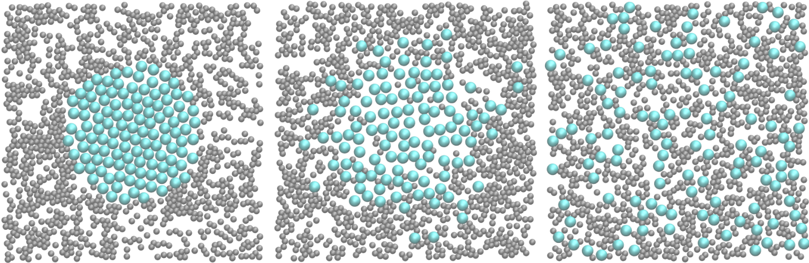
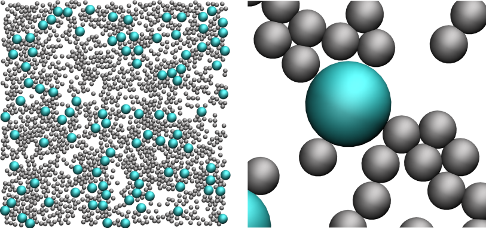

Simple molecular dynamics
The very basics of LAMMPS through a simple example: a bidimensional Lennard-Jones binary fluid
 Figure: a binary fluid in a 2D box at 3 different times
The objective of this tutorial is to use the open-source code LAMMPS (acronym for Large-scale Atomic/Molecular Massively Parallel Simulator) to perform a simple molecular dynamics simulation: a binary fluid in a 2D box, Lennard-Jones potential between atoms, and Langevin thermostating. This tutorial illustrates the use of several ingredients of molecular dynamics simulations, such as system initialization, energy minimisation, integration of the equations of motion, and trajectory visualisation.
There are several parts to this tutorial:
- Softwares installation - A quick look at the required softwares
- LAMMPS input script - Description of the LAMMPS input file and its most basic commands
- Trajectories visualisation - Atoms and trajectories visualisation using VMD
- Improving LAMMPS script - Toward better and slightly more advanced LAMMPS scripts
- Restarting from a saved configuration - Saving a configuration and using it as a new starting point
Software installation
You need to download and install LAMMPS, the code that will allow us to perform molecular simulations. You can do it following the instructions of the LAMMPS website. Alternatively, if you are using Ubuntu OS, you can simply execute the following command in a terminal:
sudo apt-get install lammpsYou can verify that LAMMPS is indeed installed on your computer by typing in the terminal :
lmpYou should see the version of LAMMPS that has been installed. On my computer I see
LAMMPS (20 Nov 2019)In addition to LAMMPS, you will also need (1) a basic text editing software such as Vim, Gedit, or Notepad++, (2) a visualization software, here I will use VMD (note: VMD is free but you have to register to the uiuc website in order to download it. If you don't want to, you can also use Ovito.), (3) a plotting tool like XmGrace or pyplot.
The input script
In order to run a simulation using LAMMPS, one needs to write a series of commands in an input script. A typical input script contains five categories, which we are going to fill up one by one. Create a blank text file, call it 'input_01.lammps', and copy the following lines in it:
# PART A - ENERGY MINIMIZATION
# 1) Initialization
# 2) System definition
# 3) Simulation settings
# 4) Visualization
# 5) RunIn the first section of the script, called 'Initialization', let us indicate to LAMMPS the type of simulation we are going to execute by specifying the most basic information, such as the conditions at the boundaries of the box (e.g periodic, non-periodic) or the type of atoms (e.g. uncharged single dots, spheres with angular velocities). Enter the following lines:
# 1) Initialization
units lj
dimension 2
atom_style atomic
pair_style lj/cut 2.5
boundary p p pExplanations: The first line indicates that we want to use the system of unit called 'lj' for which all quantities are unitless. The second line indicates that the simulation is bidimensional (2D), the third line that the atomic style will be used, therefore atoms are just a dot with a mass. The fourth line indicates that atoms are going to interact through a Lennard-Jones potential with a cut-off equal to 2.5 (unitless), and the last line indicates that the periodic boundary conditions will be used along all three directions of space (the three 'p' stand for 'x', 'y', 'z', respectively).
At this point, you have a LAMMPS script that does nothing. You can execute it to verify that there is no mistake by running the following command in the terminal:
lmp -in input_01.lammpsWhich should return something like
LAMMPS (20 Nov 2019)
Total wall time: 0:00:00If there is a mistake in the input script, for example if 'atom_stile' is written instead of 'atom_style', LAMMPS will give you a warning:
LAMMPS (20 Nov 2019)
ERROR: Unknown command: atom_stile atomic (src/input.cpp:232)
Last command: atom_stile atomicLet us fill the second part the of the input script:
# 2) System definition
region myreg block -30 30 -30 30 -0.5 0.5
create_box 2 myreg
create_atoms 1 random 1500 341341 myreg
create_atoms 2 random 100 127569 myregExplanations: The first line creates a region of space named 'myreg' that is a block (a rectangular cuboid) and extends from -30 to 30 along \(x\), from -30 to 30 along \(y\), and from -0.5 to 0.5 along \(z\), all expressed in non-dimensional form because we are using the `lj' system of units. The second line creates a simulation box based on the region 'myreg' with '2' types of atoms. The third command specifies that 1500 atoms of type 1 must be created randomly in the region 'myreg'. The integer '341341' is a seed that can be changed in order to create different initial conditions for the simulation. The fourth line creates 100 atoms of type 2.
If you run LAMMPS, you should see the following in the terminal:
LAMMPS (20 Nov 2019)
Created orthogonal box = (-30 -30 -0.5) to (30 30 0.5)
1 by 1 by 1 MPI processor grid
Created 1500 atoms
create_atoms CPU = 0.000807692 secs
Created 100 atoms
create_atoms CPU = 4.097e-05 secs
Total wall time: 0:00:00From what is printed in the terminal, it is clear that LAMMPS correctly interpreted the commands, and first created the box with desired dimensions, then 1500 atoms, then 100 atoms.
Let us fill the third section of the input script:
# 3) Simulation settings
mass 1 1
mass 2 1
pair_coeff 1 1 1.0 1.0
pair_coeff 2 2 0.5 3.0Explanations:The two first commands attribute a mass equal to 1 (unitless) to both atoms of type 1 and 2, respectively. The third line sets the Lennard-Jones coefficients (respectively the depth of the potential well \(\epsilon\) and the distance at which the particle-particle potential energy is zero \(\sigma\) for the interactions between atoms of type 1. The last line sets the Lennard-Jones coefficients for the interactions between atoms of type 2.
By default, LAMMPS calculates the cross coefficients (here for the interactions between atoms of type 1 and 2) using geometric average: \(\epsilon_{ij} = \sqrt{\epsilon_{ii} \epsilon_{jj}}\), \(\sigma_{ij} = \sqrt{\sigma_{ii} \sigma_{jj}}\). Note that the arithmetic rule, where \(\epsilon_{ij} = \sqrt{\epsilon_{ii} \epsilon_{jj}}\) and \(\sigma_{ij} = (\sigma_{ii}+\sigma_{jj})/2\), is more commonly used. However neither the geometric nor the arimetic rule is based on rigorous argument, so here the geometric rule will do just fine.
Cross parameters can also be explicitely specified using 'pair_coeff 1 2'.
The input script is almost done, we just need to fill the 'Visualization' and 'Run' sections:
# 4) Visualization
thermo 10
# 5) Run
minimize 1.0e-4 1.0e-6 1000 10000
Explanations: The thermo command asks LAMMPS to print thermodynamic information (e.g. temperature, energy) in the terminal every 10 timesteps. The second line asks LAMMPS to perform an energy minimization of the system.
An energy minimization procedure consists in adjusting the coordinates of the atoms until one of the stopping criteria is reached. Here there are four stopping criteria:
- 1 - The change in energy between two iterations is less than 1.0e-4,
- 2 - the maximum force between two atoms in the system is lower than 1.0e-6,
- 3 - the maximum number of iterations is 1000,
- 4 - the maximum number of times the force and the energy have been evaluated is 10000.
Now running the simulation, you should see the following lines in the terminal:
Step Temp E_pair E_mol TotEng Press
0 0 5.8997404e+14 0 5.8997404e+14 1.5732641e+15
10 0 56275037 0 56275037 1.5007118e+08
20 0 17731.329 0 17731.329 47458.738
30 0 350.68529 0 350.68529 972.14134
40 0 13.745948 0 13.745948 48.748312
50 0 0.5033657 0 0.5033657 8.3398718
60 0 -1.4427524 0 -1.4427524 1.1131474
70 0 -1.7136665 0 -1.7136665 -0.038162464
80 0 -1.7516642 0 -1.7516642 -0.15686171
81 0 -1.7518285 0 -1.7518285 -0.15730928Explanations: These lines give us information concerning the progress of the energy minimization. First, at the start of the simulation (step 0), the energy in the system is huge: 5.8997404e+14 (unitless). This was expected because the atoms have been created at random positions within the simulation box, and some of them are probably overlapping, resulting in a large initial energy which is the consequence of the repulsive part of the Lennard-Jones interaction potential. As the energy minimization progresses, the energy rapidly decreases and reaches a negative and also more acceptable value, indicating that the atoms have been displaced at reasonable distances from one another. Other useful information have been printed in the terminal, for example, LAMMPS tells us that the first of the four criteria to be satisfied was the energy:
Minimization stats:
Stopping criterion = energy toleranceYou may also see the following warning:
WARNING: Using 'neigh_modify every 1 delay 0 check yes' setting during minimizationThere is nothing to worry about at this stage, the message is simply an indication that LAMMPS is building the pairwise neighbor lists (that are used by LAMMPS to evaluate the interaction between atoms) more frequently than the default value during the minimization.
The system is ready, now let us start the second part of the input script, the molecular dynamics simulation. In the same script, after the minimization command, add the following lines:
# PART B - MOLECULAR DYNAMICS
# 4) Visualization
thermo 1000
variable kinetic_energy equal ke
variable potential_energy equal pe
variable pressure equal press
fix myat1 all ave/time 10 1 10 v_kinetic_energy v_potential_energy v_pressure file energy.dat
# 5) Run
fix mynve all nve
fix mylgv all langevin 1.0 1.0 0.1 1530917
fix myefn all enforce2d
timestep 0.005
run 10000Explanations: Three variables have been defined in order to print the kinetic energy, the potential energy, and the pressure of the system in the file named 'energy.dat'. Then, in the run section, the fix 'nve' is used to update the positions and the velocities of the atoms in the group `all' (this is the most important command here). The second fix applies a Langevin thermostat to the atoms of group `all', with a desired temperature of 1 and a damping parameter of 0.1. The number '1530917' is a seed, you can change it to perform statistically independent simulations with the same system. The third fix ensures that the atoms remain within the 2D plan. Finally we choose the timestep and we ask LAMMPS to run for 10000 timesteps. After running the simulation, you should see the following information in the terminal:
Step Temp E_pair E_mol TotEng Press
81 0 -1.7518285 0 -1.7518285 -0.15730928
1000 1.0001038 -1.2883573 0 -0.28887856 1.0156263
2000 1.0281454 -1.3280807 0 -0.3005779 0.8047188
3000 1.0254482 -1.3054918 0 -0.28068451 0.88795845
4000 0.99949105 -1.3460791 0 -0.34721269 0.76839631
5000 1.0169355 -1.3255802 0 -0.30928026 0.7867611
6000 1.022756 -1.3368899 0 -0.31477316 0.67073269
7000 0.99475526 -1.3264244 0 -0.33229089 0.82847903
8000 1.0027712 -1.3422586 0 -0.34011418 0.73362563
9000 0.97476289 -1.3287238 0 -0.35457015 0.76153916
10000 0.97759346 -1.3218996 0 -0.34491712 0.72232437
10081 1.0136339 -1.2913059 0 -0.27830551 0.8433209The second column shows that the temperature oscillates near \(T=1\), as requested. Note that the temperature starts from 0, but rapidly reaches the expected value thanks to the applied Langevin thermostat. In the terminal, you may also see
Total # of neighbors = 8560
Ave neighs/atom = 5.35
Neighbor list builds = 999
Dangerous builds = 998
Total wall time: 0:00:02During the simulation, they have been 998 dangerous builds. This is an indication that something is wrong: some atoms have moved more than expected in between two calculations of the neighbor lists. Let us add the following command in the 'Simulation settings' section:
neigh_modify every 1 delay 5 check yesWith this command, LAMMPS will rebuild the neighbour lists more often. Re-run the simulation, and you should see a more positive outcome with 0 dangerous build:
Total # of neighbors = 8514
Ave neighs/atom = 5.32125
Neighbor list builds = 1152
Dangerous builds = 0
Total wall time: 0:00:02
From what has been printed in the energy.dat file, let us
plot the kinetic energy, potential energy, and pressure of the system
over time:

All three quantities rapidly evolve at the beginning of the simulation, before reaching
an equilibrium value.
Trajectories visualisation
The simulation is running well, but we would like to visualize the trajectories of the atoms. To do so, we need to dump the positions of the atoms in a file at a regular interval. Add the following command in the 'visualization' section of PART 2:
dump mydmp all atom 1000 dump.lammpstrjRun LAMMPS again. A file named dump.lammpstrj must appear in the same folder as your input. This file can be opened using VMD or Ovito. In Ubuntu, if VMD is installed, you can simply execute in the terminal:
vmd dump.lammpstrjOtherwise, you can open VMD and import the dump.lammpstrj file manually using file -> molecule. You should see a cloud of lines. You can improve the representation and make it look like that (see this short VMD guide):

What you observe should resemble this video.
Improving the script
Let us improve the input script and perform slightly more advanced operations.
Let us create the atoms of type 1 and 2 in two separate regions, respectively. Create a new input script, and call it input_02.lammps. Similarly to what has been done for input_01.lammps, copy the following lines into the input script:
# 1) Initialization
units lj
dimension 2
atom_style atomic
pair_style lj/cut 2.5
boundary p p pLet us create a box from a predefined region, and create two additional regions and generate atoms of type 1 and 2 in each region respectively.
# 2) System definition
region mybox block -30 30 -30 30 -0.5 0.5
create_box 2 mybox
region mycylin cylinder z 0 0 15 INF INF side in
region mycylou cylinder z 0 0 15 INF INF side out
create_atoms 1 random 1000 341341 mycylou
create_atoms 2 random 150 127569 mycylinExplanations: The 'side in' and 'side out' keywords allow us to define regions that are respectively 'inside the cylinder', and 'everything that is not inside the cylinder'.
We can write the remaining of the input script as follow:
# 3) Simulation settings
mass 1 1
mass 2 1
pair_coeff 1 1 1.0 1.0
pair_coeff 2 2 0.5 3.0
neigh_modify every 1 delay 5 check yes
# 4) Visualization
thermo 10
dump mydmp all atom 10 dump.min.lammpstrj
# 5) Run
minimize 1.0e-4 1.0e-6 1000 10000
write_data minimized_coordinate.data
Explanations: The novelty with respect to the previous
input script is the command 'write_data'. This command asks
LAMMPS to print the final state of the simulation in a file
named 'minimized_coordinate.data'. This file will be used later to
restart the simulation from the final state of the energy
minimisation step.
Run LAMMPS using the input_02.lammps script. If everything
goes well, a dump file named dump.min.lammpstrj will appear
in the folder, allowing you to visualize the atoms
trajectories during minimization using VMD or Ovito.
In addition, a file named minimized_coordinate.data will be created.
If you open this file, you will see that it contains all
the information necessary to restart the simulation, such
as the number of atoms and the size of the box:
1150 atoms
2 atom types
-3.0000000000000000e+01 3.0000000000000000e+01 xlo xhi
-3.0000000000000000e+01 3.0000000000000000e+01 ylo yhi
-5.0000000000000000e-01 5.0000000000000000e-01 zlo zhiThe minimized_coordinate.data file also contains the final positions and velocities of all the atoms:
Atoms # atomic
345 1 -2.8836527978635523e+01 -2.9323791349242530e+01 0.0000000000000000e+00 0 0 0
979 1 -2.9382597284003467e+01 -2.8335352105920894e+01 0.0000000000000000e+00 0 0 0
435 1 -2.5412729704650008e+01 -2.9697644643809667e+01 0.0000000000000000e+00 0 0 0
533 1 -2.5033422381244598e+01 -2.8519424750144708e+01 0.0000000000000000e+00 0 0 0
347 1 -2.4330866813628781e+01 -2.9373591404712414e+01 0.0000000000000000e+00 0 0 0
448 1 -2.3610197298718113e+01 -2.8518785172533800e+01 0.0000000000000000e+00 0 0 0
(...)Explanations: The columns of the Atoms section correspond (from left to right) to the atom indexes (from 1 to the total number of atoms, 1150), the atom types (1 or 2 here), the atoms positions (\(x\), \(y\), \(z\)) and the atoms velocities (\(v_x\), \(v_y\), \(v_z\)).
Restarting from a saved configuration
We are going to create a new input file and start a molecular dynamics simulation directly from the previously saved configuration. In the same folder, create a new file named input_03.lammps and copy the same lines as previously:
# 1) Initialization
units lj
dimension 2
atom_style atomic
pair_style lj/cut 2.5
boundary p p pNow instead of creating a new region and adding atoms, we simply add the following command:
# 2) System definition
read_data minimized_coordinate.data
By visualizing the previously generated dump.min.lammpstrj
file, you may have noticed that some atoms have moved
from one region to the other during minimisation,
as seen in this video.
In order to start the simulation from a clean state, with
only atoms of type 2 within the cylinder and atoms of
type 1 outside the cylinder, let us delete the misplaced
atoms by adding the following commands:
region mycylin cylinder z 0 0 15 INF INF side in
region mycylou cylinder z 0 0 15 INF INF side out
group mytype1 type 1
group mytype2 type 2
group incyl region mycylin
group oucyl region mycylou
group type1in intersect mytype1 incyl
group type2ou intersect mytype2 oucyl
delete_atoms group type1in
delete_atoms group type2ouExplanations: These commands will respectively recreate the previously defined regions (regions are not saved by the write_data command), create groups, and finally delete the atoms of type 1 that are located within the cylinder, as well as the atoms of type 2 that are located outside the cylinder. If you run LAMMPS, you can see in the terminal how many atoms are in each group, and how many atoms have been deleted:
1000 atoms in group mytype1
150 atoms in group mytype2
120 atoms in group incyl
1030 atoms in group oucyl
1 atoms in group type1in
31 atoms in group type2ou
Deleted 1 atoms, new total = 1149
Deleted 31 atoms, new total = 1118Similarly to previously, add the following simulation settings:
# 3) Simulation settings
mass 1 1
mass 2 1
pair_coeff 1 1 1.0 1.0
pair_coeff 2 2 0.5 3.0
neigh_modify every 1 delay 5 check yes
group type1 type 1
group type2 type 2
# 4) Visualization
thermo 50000
dump mydmp all atom 5000 dump.RUN.lammpstrjNote that 2 atom groups have been defined, they are useful here to extract the coordination number between atoms of type 1 and 2. Let us extract this coordination number, as well as the number of atoms of each type in each region, by adding the following commands to the input file:
variable Ntype1in equal count(mytype1,mycylin)
variable Ntype1ou equal count(mytype1,mycylou)
variable Ntype2in equal count(mytype2,mycylin)
variable Ntype2ou equal count(mytype2,mycylou)
fix myat1 all ave/time 1000 10 10000 v_Ntype1in v_Ntype1ou file population1vstime.dat
fix myat2 all ave/time 1000 10 10000 v_Ntype2in v_Ntype2ou file population2vstime.dat
compute coor12 type1 coord/atom cutoff 2.0 group type2
compute sumcoor12 all reduce ave c_coor12
fix myat3 all ave/time 1000 10 10000 c_sumcoor12 file coordinationnumber12.dat
Explanations: As seen previously, the fixes ave/times allow to evaluate
previously defined
variables and print the values (here every 10000 steps, averaged 10 times)
into data file. The variables Ntype* are used to count the number
of atoms of a specific group in a specific region.
The compute ave is used to average the per atom coordination number
resulting of the coord/atom compute.
Finally, let us complete the script by adding the run section:
# 5) Run
velocity all create 1.0 4928459 mom yes rot yes dist gaussian
fix mynve all nve
fix mylgv all langevin 1.0 1.0 0.1 1530917 zero yes
fix myefn all enforce2d
timestep 0.005
run 3000000
write_data data.mixed.lammps
Explanations: There are a few differences with the
previous input script. First, the 'velocity create' command
attributes an initial velocity to all the atoms.
The initial velocity is chosen so that the initial temperature
is equal to 1 (unitless). The additional keywords ensure
that no linear momentum and no angular momentum are given
to the system, and that the generated velocities are
distributed as a Gaussian. Another novelty is the
'zero yes' keyword in the Langevin thermostat,
that ensures that the total random force is equal to zero.
After running the simulation, you can observe the number
of atoms in each region from the generated data files, as
well as the evolution of the coordination number due to mixing:

The final simulation should resemble this video.
You can access the input scripts that have been written in this tutorial from Github.
Going further with exercises
Preamble : on the importance of energy minimisation
A good way to master LAMMPS and molecular dynamics simulations is to play around with a script that is already working and observe the differences and/or errors occurring. For example, with the input file input_01.lammps, we can explore what happens if we don't perform a minimisation step and start the molecular dynamics directly. To do so, comment the two following lines:
# thermo 10
# minimize 1.0e-4 1.0e-6 1000 10000If you run LAMMPS again, you should get something like:
Step Temp E_pair E_mol TotEng Press
0 5.8997404e+14 0 5.8997404e+14 1.5732641e+15
ERROR: Lost atoms: original 1600 current 272 (src/thermo.cpp:438)
Last command: run 10000Explanations: The message indicates that LAMMPS lost some of the atoms, then stopped. This is one of the most common error message that you will see. It is usually the consequence of badly constructed system or inappropriate dynamics. In the present case, atoms are too close to each others initially, so the forces are huge, leading to enormous acceleration. As a consequence, atoms are moving by large distances during the firsts timesteps, and LAMMPS loses them.
Exercise 1 : perform a minimization using fix langevin only
Perform an energy minimization without using the minimize command (this is sometimes usefull, particularly for rigid water models using shake for whiches the minimize command cant be used).
Exercise 2a : make the same simulation in 3D
Does the system reaches equilibrium (i.e. a fully mixed state) faster? or slower?
Exercise 2b : perform an actual NVE simulation
Despite using the NVE fix, simulations here are not performed in the NVE ensemble (because of the use of the thermostat). Starting from the system of the Exercise 2a, perform a simulation in the NVE ensemble and extract the energy over time. Is it conserved as expected? What if you do the same with a 2D simulation?
Exercise 3 : induce a net flow
So far, atoms were freely diffusing. Add an external acceleration to induce a net flow of atoms in aone direction. The value for the acceleration must be chosen so that the system is not 'too out-of-equilibrium'. The final simulation should resembles this video.